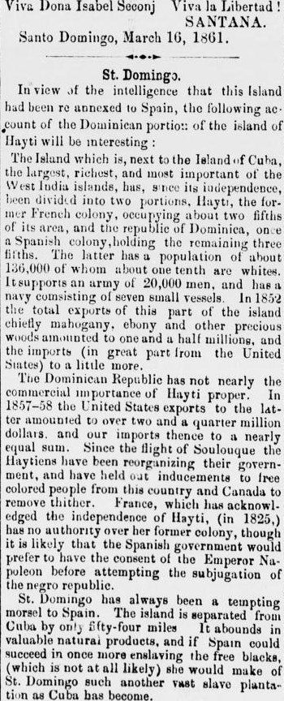
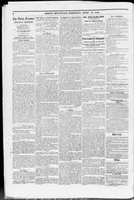

The Acquisition of St. Domingo by Spain.La adquisición de Santo Domingo por España.
The Daily Green Mountain Freeman. Montpelier, Vt., April 16, 1861. Page 2.The Daily Green Mountain Freeman. Montpelier, Vt., 16 de abril de 1861. Página 2. View the originalVer el original


See the full pageVer la página completaFollowing the closing lines of a proclamation dated Santo Domingo, March 10, 1861, and signed by Santana with cries of long live Doña Isabel II and liberty, The Daily Green Mountain Freeman presents an account of the Dominican portion of the island in view of intelligence that it has been re-annexed to Spain. The paper describes the island of Haiti as the largest, richest, and most important of the West India islands next to Cuba, noting that since its independence it has been divided into Haiti, a former French colony occupying about two-fifths of its area, and the "republic of Dominica" (the Dominican Republic), a former Spanish colony holding the remaining three-fifths. According to the report, the Dominican Republic has a population of about 105,000, roughly one-tenth of whom are white, and maintains an army of 20,000 men and a navy of seven small vessels. In 1852, its total exports—chiefly mahogany, ebony, and other precious woods—amounted to one and a half million dollars, while its imports, largely from the United States, totaled slightly more.Tras las líneas finales de una proclama fechada en Santo Domingo el 10 de marzo de 1861 y firmada por Santana con vivas a Doña Isabel II y a la libertad, The Daily Green Mountain Freeman presenta una reseña de la parte dominicana de la isla ante la noticia de que ha sido reanexada a España. El periódico describe la isla de Haití como la más grande, rica e importante de las Antillas después de Cuba, señalando que desde su independencia se ha dividido entre Haití, antigua colonia francesa que ocupa cerca de dos quintas partes de su superficie, y la llamada «república de Dominica» (la República Dominicana), antigua colonia española que posee las tres quintas partes restantes. Según el informe, la República Dominicana tiene una población de unos 105,000 habitantes, de los cuales aproximadamente una décima parte son blancos, y mantiene un ejército de 20,000 hombres y una armada de siete embarcaciones pequeñas. En 1852, sus exportaciones totales —principalmente caoba, ébano y otras maderas preciosas— ascendieron a un millón y medio de dólares, mientras que sus importaciones, procedentes en gran parte de los Estados Unidos, superaron ligeramente esa cifra.
FULL TEXT:TEXTO COMPLETO:
The Daily Green Mountain Freeman April 16, 186116 de abril de 1861
Original in English.Original en inglés.
The Acquisition of St. Domingo by Spain.
The Havana correspondent of the New York Express thus confirms the reported annexation of the Dominican Republic to Spain:
"Havana, April 5.—The news in relation to the Dominican Republic, and its annexation to the Spanish Realm, are confirmed in every respect. The army which will sustain this movement is composed of about 7000 men, and four Spanish steam frigates are already in the port of St. Domingo city, or bay of Sameno, to inaugurate the acquisition—the Blanca, Berenguela, Isabel la Catolica, and Velasco—and the whole matter only waits the ratification of the Queen, by accepting the fabricated donation of territory, jurisdiction and sovereignty, got up by Col. Font of the Spanish army, acting under ministerial instruction from Madrid. The proclamation of Santana, prepared under Spanish dictation, (by Col. Font) has been published here, with suitable laudatory and gratulatory notices."
We make the following extract from the proclamation of Santana :
Dominicans: The ambition and the resentment of one man alone separated us from the mother country ;days afterward the Haytien lorded it over our territory ; our valor expelled him therefrom ; the years that have passed since then, have been very eloquent for all.
Shall we allow ourselves to lose our present position, so dear to us, but not sufficiently strong to assure our future and that of our children? Before such a thing should happen ; before we see ourselves like those other unhappy republics, incessantly involved in civil war, sacrificing valiant generals, statesmen, numerous families, considerable fortunes, and a multitude of unhappy citizens, without finding any means of establishing themselves on a solid and firm base ; before that day arrives, I who have watched always for your security, I who aided by your valor have defended inch by inch the soil that we tread, I who know the greatness of your necessity, I bid you to see what is shown to you in the Spanish nation, to see what they grant us.
She gives us the civil liberty which her people enjoy ;she guarantees us natural liberty and removes forever the possibility of losing it; she secures us in our property, recognizing as valid all the acts of the Republic ; she offers to seek out and reward merit : and will remember services rendered to the country.
Together we will bow before the altars which that nation erected—before those very altars which she will find now just as she left them, intact, and crowned even with her coat of arms, her castles and lions, the standard which, side by side with the cross, Columbus planted in these unknown lands in the name of Isabella the First, the great, the noble.—Let us unfold the standard of her monarchy and proclaim her our Queen and Sovereign.—Viva Dona Isabel Seconj Viva la Libertad!
SANTANA.
Santo Domingo, March 16, 1861.
St. Domingo.
In view of the intelligence that this Island had been re annexed to Spain, the following account of the Dominican portion of the island of Hayti will be interesting :
The Island which is, next to the Island of Cuba, the largest, richest, and most important of the West India islands, has, since its independence, been divided into two portions, Hayti, the former French colony, occupying about two fifths of its area, and the republic of Dominica, once a Spanish colony, holding the remaining three fifths. The latter has a population of about 136,000 of whom about one tenth are whites. It supports an army of 20,000 men, and has a navy consisting of seven small vessels. In 1852 the total exports of this part of the island chiefly mahogany, ebony and other precious woods amounted to one and a half millions, and the imports (in great part from the United States) to a little more.
The Dominican Republic has not nearly the commercial importance of Hayti proper. In 1857-58 the United States exports to the latter amounted to over two and a quarter million dollars, and our imports thence to a nearly equal sum. Since the flight of Soulouque the Haytiens have been reorganizing their government, and have held out inducements to free colored people from this country and Canada to remove thither. France, which has acknowledged the independence of Hayti, (in 1825,) has no authority over her former colony, though it is likely that the Spanish government would prefer to have the consent of the Emperor Napoleon before attempting the subjugation of the negro republic.
St. Domingo has always been a tempting morsel to Spain. The island is separated from Cuba by only fifty-four miles. It abounds in valuable natural products, and if Spain could succeed in once more enslaving the free blacks, (which is not at all likely) she would make of St. Domingo such another vast slave plantation as Cuba has become.
In this article, the newspaper calls the country 'Dominica.' It means the Dominican Republic, not the island of Dominica.En este artículo, el periódico llama al país «Dominica». Se refiere a la República Dominicana, no a la isla de Dominica.
[Editor's note: the paper writes of the east as part of Hayti. From 1822 to 1844 the Dominican Republic was held by Haitian military occupation, against its people's will; it restored its independence on February 27, 1844.][Nota del editor: el periódico habla del este como parte de Haití. De 1822 a 1844 la República Dominicana estuvo bajo ocupación militar haitiana, contra la voluntad de su pueblo; restauró su independencia el 27 de febrero de 1844.]